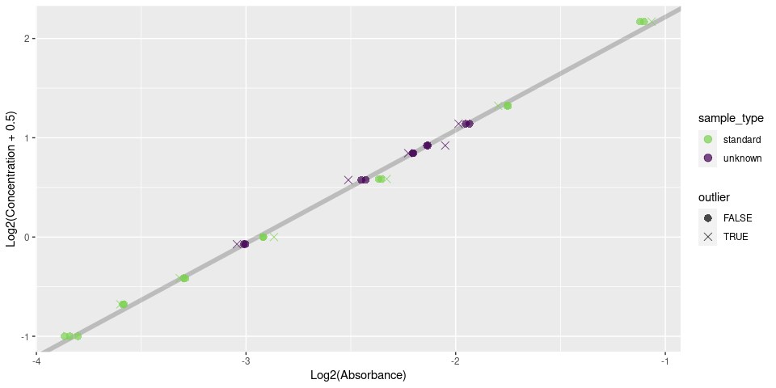

qp serves as a robust toolkit for working with MicroBCA assays. Currently, the protocol it’s best served for is here.
Installation
You can install the development version of qp from GitHub with:
# install.packages("devtools")
devtools::install_github("KaiAragaki/qp")Quickstart
If you have a nicely formatted plate with no surprises (that is, it follows this protocol), you should really only need to plug it in to qp and let it rip:
library(qp)
f <- system.file("extdata", "absorbances.txt", package = "qp")
# Most of these arguments are defaults
# I'm only writing them out so you can see what options you can set
out <- qp(
f,
replicate_orientation = "h",
sample_names = c("here", "are", "my", "sample", "names"),
remove_empty = TRUE,
ignore_outliers = "all",
standard_scale = c(0, 2^((2:7) - 5)),
n_replicates = 3,
wavelength = 562
)
#> Please wait. This will take ~10 seconds.From this, you can do things like add dilution calculations:
summary <- qp_summarize(out)
qp_dilute(summary, target_vol = 15, remove_standards = TRUE)
#> `target_conc` is missing, using lowest sample concentration
#> # A tibble: 5 × 5
#> .sample_name sample_type .mean_pred_conc sample_to_add add_to
#> <chr> <fct> <dbl> <dbl> <dbl>
#> 1 here unknown 1.71 3.97 11.0
#> 2 are unknown 1.39 4.85 10.1
#> 3 my unknown 0.989 6.85 8.15
#> 4 sample unknown 1.30 5.23 9.77
#> 5 names unknown 0.451 15 0Or make a plot to assess quality:
qp_plot_standards(out)